|
||||||||||||||||||||||||||||||||||||||||||||||||||||||||||||||||||||||||||||||||||||||||||||||
|
||||||||||||||||||||||||||||||||||||||||||||||||||||||||||||||||||||||||||||||||||||||||||||||
  |
||||||||||||||||||||||||||||||||||||||||||||||||||||||||||||||||||||||||||||||||||||||||||||||
OLD STORIES - Season 6 2008/09 |
||||||||||||||||||||||||||||||||||||||||||||||||||||||||||||||||||||||||||||||||||||||||||||||
"THANK YOU & GOODNIGHT!"Legends, Roppongi, Friday, June 26th As One League Ends, Another Begins.
YC&AC, Sunday, June 21st A Swiss Kicks the Kickers out of Div 1YC&AC, Saturday, June 20th
It's Over, Lets Hit the Bar!YC&AC, Sunday, June 7th Sala Draw Sums up BFC's SeasonFukuda Denshi, Saturday, June 6th Sala n BFC Share Spoils - Penalty Furore!!Fukuda Denshi, Saturday, June 6th
TML Champs Dethroned in Singapore, Look to Defend their Title in JapanSingapore Cricket Club, Weekend, May 23rd/24th It's Over, Lets Hit the Bar!YC&AC, Sunday, June 7th Sala Draw Sums up BFC's SeasonFukuda Denshi, Saturday, June 6th Sala n BFC Share Spoils - Penalty Furore!!Fukuda Denshi, Saturday, June 6th Embassy Crush Geckoes
|
||||||||||||||||||||||||||||||||||||||||||||||||||||||||||||||||||||||||||||||||||||||||||||||


| 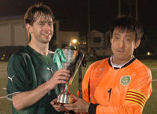 |
|
Hibs won their 2nd FJ Cup on Sun 31st beating Kanto Celts with a Golden Goal |
Sala Edge Out Hibs With Historic Victory
YC&AC, Sunday, May 24th
In terms of positions in the league table this game had little meaning. However, in terms of pride and history there was everything to play for. Attempting to beat Hibs for the first time in a league game, Sala pushed a little harder in the last 20 minutes, found their match winner, and fought their way to a deserved 1-0 victory over last year's champions. more ...
ST
 |
|
'King Kazu' scored 4 goals as RW Geckoes rout Saitama JETS 7-0 at Mitsuike koen. |
Geckoes Fly Past Jets
Mitsuike Koen, Saturday, May 24th
A good day for footy on a warm Saturday afternoon in May the Geckoes and Jets showed up at a new pitch for both teams I believe. Very similar to Oi-dirt with perhaps a few more bumps and therefore bobbles. The ref made sure every was ready, shirts tucked in? Ok, very good, let’s go.
The Jets were a bit out of sorts and fielding some new players, which was the excuse they gave me after the game anyway, but fair enough I didn’t recognize many of them. more ...
ST
A Tale of Two Sitters – Vags End 3-game Winning Streak.
 |
|
Lenny Tui picks up the trophy as Chiba JB (aka Sala FC) won their 5th ALT tournament in Nagano. more |
Hodogaya Koen, Saturday, May 23rd
A masterclass in survival saw Barbarians defeat an over-populated Vags team at the luxurious Hodogaya Koen by a whopping 4-0. more ...
KG
Lions Kept Caged at Sala Zoo! Zoo Keepers Fight!
Fukuda Denshi, Saturday, May 9th
With animal welfare representatives waiting in the wings, Sala FC did their level best to ensure that these Lions were whipped, tamed and then caged early doors with a minimum of distress to the big cats. With Chief Lion Tamer, Rob Harlow slotting home 2 goals in the first 10 minutes and Head Zoo Keeper, Paul Clarke sweeping out the cages at the back, all that remained for Sala to do was throw a couple of meager scraps to the hungry carnivores, so as not to encourage cries of animal cruelty, have a bitch-fight with each other and ride out the match for a comfortable 2-0 victory. more ...
ST
Dutch Go Dutch to Finish
Yoyogi NHK, Saturday, May 16th
And with a spectacular 3-3 draw with the Barbarians team, another Division Two season has come to pass for the Dutch. more ...
LV
Raving Madness on the Blasted Heath
Sagamisansen, Sunday, May 17th
Obviously the raving madness referred to in the title is the insane idea of trying to play a game of football with a 50 mile-an-hour hurricanoe blowing almost straight down the field carrying a limitless cargo of horizontal rain that started as fine as an aerosol spray, gained enough strength during the first half to stab more needles into your arms and legs than even the most voracious smack addict could ever wish for, and in the second half - well, I've no idea: it was blowing so hard into my eyes I had no chance to look up and see. But as the sportswriter's venerable cliché says, it was the same for both sides, and it was the Robert Walters Clash who survived it better than the Albion Old Boys to depart the sodden scene at Sagamisansen with a much-needed 3-1 win. more ...
TC
Doyle Delivers
Fukuda Denshi, Saturday, May 16th
Vags extended their winning streak to 4 with a good one against Maritzio. Maritzio’s results have improved considerably of late and it was a much changed (and improved) squad that lined up against us, and the game was in sharp contrast to the two comfortable victories already posted against them this season. more ...
RS
Who put that baby there?
ASIJ, Sunday 10th May
The most heart-stopping moment of BFC's 2-0 win over the JETs was the baby Pomares wrapped in a blanket and almost getting stepped on by giants in football boots. more ...
AH
Panther’s Purrfect 10
Misato, Sunday 10th May
It is with a tear in my eye that I write this, my last report, for the Panthers. I’m not sure if it because I am sad to leave or there is still dust in my eyes from playing in the sand pit which is Misato! I think this one has been done to death and Kev “conspiracy theory” Gray’s views on the subject are well known, to everyone in Tokyo!! Suffice to say it was a very nice day and nice weather for a bit of footy more ...
LR
Low-Octane Old Boys Lack Final Spark
YCAC, Saturday, May 9th
Flat battery, no gas in the tank, wheels coming off - whichever motoring metaphor you choose it looks as if the Albion Old Boys promotion juggernaut has become a clapped-out jalopy as an embarrassing second-half breakdown allowed second-placed Zion FC to speed off into the distance with a comprehensive 7-3 win. more ...
TC
The African Lions Still Dominating the British Lions.
ASIJ, Sunday 3rd May
With the first round game finishing 1-0 to Lions, BFC were eager to pull one over the ex-Div 2 champs....and with Lions still unable to field their first choice string.....they still had a strong 16, including the infamous Orlando Torres, but this time not between the posts, but upfront....Fernando Torres?! more ...
HS
Flag-happy, whistle-shy, waste of time!!!
ASIJ, Sunday 3rd May
Be nice if the TML posted this report. It is an accurate reflection of events which spoiled a perfect evening under a crescent-shaped moon.
Result: BFC held to a 1-1 draw by the Lions. A flag-happy linesman and a referee who should have over-ruled a blatantly false offside left a sour taste. more ...
AH
Old Buoys Show Better Buoyancy, But Dutch Sail Off with Points
Fukuda Denshi, Saturday, April 25th
If you've ever tried to watch water polo for more than five minutes without slumping unconscious with boredom, you'll know how ridiculous the spectacle of grown men trying to move a ball through a swimming pool can be. Nevertheless, a couple of dozen sodden berks travelled all the way out to the dark end of the Keiyo line last Saturday to spend a freezing cold ninety minutes splashing around in the shallow end of Fukuda Denshi's unheated outdoor pool, and though the Albion Old Boys' Medley team achieved several personal bests in the doggy paddle they were unable to cancel out the Dutch Embassy's first minute goal. more ...
TC
From Gelled to Jibberish!
YCAC, Wednesday, April 29th
This was the big one. Winner takes all, title decider, great weather, new pitch, big crowd, all we needed was to walk on the field holding hands and we’d feel like Brazil in a world cup. Then the whistle blew and that was pretty much that. A letdown that will sting for some time to come. But if there is one thing about sport - it teaches you to deal with your defeats and how to come back from them. After the Hibs had dominated the season in the 08/09 TML and still in the FJ cup, it seemed like we hadn’t lost a game since Sid had brown hair. more ...
BC
It's Not a Wrap. But it's all Wrapped Up.
|
Leading scorer Tyson Masar (R) took his tally to 27 as YCAC became Div 1 Champs |
YCAC, Sunday, April 29th
It's not really on to write a TML wrap up story before the season's ended, but let's face it YCAC 1st X1 wrapped up their season somewhat decisively by systematically dismantling Tokyo Hibernian FC. 4-0 was the final score in a game that saw YCAC go 3 ahead in the first half. Hibs had to take points from this game to keep any hopes of the title in sight but alas, it wasn't to be.
YCAC 1st XI will be the name inscribed on the Division One trophy and Hibs, once again left with an annoying sense of déjà vu, will be wondering what on earth happened as going into the second half of the season all smart money was on the little green men to triumph - but that's football. more ...
FJ
A Tale of 20 Throw ins!
 |
|
Eric Follet rides the tackle of Romen the Merciless as Panthers beat Yabe 1-0. |
YCAC, Wednesday, April 29th
Panthers started the match with 5 changes to the team that beat El Diego, but we showed our depth and how far we have come this season. It was a chance for some of the old skool Panthers folk to prove their worth and that they did!
It isn’t often you are thankful for rain but I know the Panthers were as we got to play on the lovely YC&AC pitch instead of the bog that is Misato. Still never look a gift horse in the mouth and off to Yokohama we went!
The gaffer sent us onto the pitch with his usual enigmatic words of wisdom. “Go out and play football” was one of the better ones, as at one point we were slightly confused at the sight of goals, a pitch and round balls that some say you kick! more ...
LR
Celts Pick Off Sala on the Counter
YCAC, Sunday, April 26th
Sala FC’s hopes of concluding the season at the dizzy heights of number 4 were severely dashed at the weekend by a typically stoic Kanto Celts performance – 2 goals carved out with minimum effort by the Celts prompted little response from a tired looking Sala. more ...
ST
Hamstrung Hero Hide Hammers Hattrick Hagainst Hapless Huguenots
YCAC, Saturday, April 25th
...and then there was one. Only one team stands between YCAC and its 1st TML title; our visitors this Wednesday night, The Hibs. Just three more points for all the marbles but anything less probably leaves the boys in Green as the 1st 3-time TML Champs. One of their final 3 opponents, Sala, Swiss and France would have to beat them if they take a point from Wednesdays showdown. Sala! How delicious a Sala win to give YCAC the title would be. Years of futility for us against them and them against Hibs (10-1 anyone?) banished by a single result. I might rename my 3 boys Guido, Toby and Brookey, or not. more ...
ST
Old Boys Survive Pub Time Kick Off
YCAC, Saturday, April 18th
For a team containing several players whose careers began before floodlights were invented, six o'clock on a Saturday night is a time to be in the bar talking bollocks about football, not out on the pitch playing bollocks at it. Nevertheless the Albion Old Boys managed to overcome this unwelcome disruption to their circadian rhythms and emerged from a hard battle against YCAC 2nds with a reasonably creditable 1-1 draw. more ...
TC
Sala - Geckoes Spoil the Shares
YCAC, Saturday, April 18th
In hindsight this 6 goal thriller seemed to be the inspiration behind the classic played out by Liverpool and Arsenal earlier this week. There were thrills, spills, great goals and foul mouths galore.
Right, I’m going to get my managerial excuses out of the way nice and early. In the week leading up to this game, we lost players for all kinds of unimaginable reasons. The last one being on the day of the game with Yusuke getting struck down by food poisoning. So into the game we went with 12 men. more ...
IJ
Panteras Venció El Diego
Nagahama, Saturday 11th April
Our illustrious leader Romen Benitez goes to extraordinary lengths for his team. Some call him mad, we call him dedicated! Still he managed to hire a mini bus for the team outing to the Marino’s training ground. I call that dedication (madness), either that or the level of paranoia over team attendance is way too high! more ...
LR
Thrilla and Vanilla
Todoroki, Saturday 11th April
Little Danny boy is going back to Brighton on April 20th. Happy 420. But we know he will feel homesick away from his BFC family and he will be back soon. His last game for BFC was rightfully played on a teensy-weensy pitch that allowed shooting from virtually anywhere ensuring a ten goal thrilla akin to his beloved ‘Winning Eleven’ (That’s ‘Pro Evolution’ for those of you who don’t live in Japan). The three new cheerleaders that BFC recently recruited, whose combined age came to about 57 (seriously), seemed to enjoy every minute of it. Danny almost scored the goal of the game, but his 20-yard belter rattled off the underside of the bar with great fury and some suspect it could have crossed the line but the officials were nowhere close to judge. more ...
GK
Panthers Smoke Stoneds!
 |
|
Panthers captain Romen lets a Stoner past, but promotion is still in sight for Panthers. |
Todoroki, Saturday 11th April
Grass, Grass, Grass, what else could we play on when faced with the Stoneds? A beautiful day awaited us at Todoroki grass pitch, sadly we found the pitch to be slightly narrower than usual due to some reseeding, the pitch looked like it had gone on some kind of crash diet, long and really thin. Still it was a grass pitch and its silky surface was great to play on!
Stoneds started the match with 9 players and keen to take the advantage the Panthers took shots from all ranges, long, short, and medium I guess! headers, volleys, but we couldn’t quite get the ball in the net. more ...
LR
Sala Thump BEFC, Continue Winning Streak
Fukuda Denshi, Sunday 5th April
After a good natured and fair match (excluding the copious amounts of 2nd half thumb wrestling, shirt tugging and man sandwiching) Sala ran out convincing 5-1 winners against a spirited BEFC outfit with a fine hatrick from Tobias Long, and one apiece from fellow strikers Sam Matthews and Rob Harlow. BEFC scored a consolation penalty, won and scored by their unnamed substitute. more ...
ST
10-Man Maritizio Emerge Victorious from Heat of Dutch Oven
|
Stand-in Maritizio keeper David Blanco is quick off his line to block So Takada. |
Misato, Sunday 5th April
Maritizio FC showed their mettle by digging deep against a capable Dutch Embassy side to record a controversial but memorable victory on the Misato marshland that continues an impressive record of three wins in the last three games for 'Tizio.
There was little between the teams in the opening 20mins with both playing a cagey midfield game, but if anything, the Dutch made the better start with numerous assaults on a Maritizio defence that looked to be struggling to rouse themselves from Sunday morning snoozes in the face of such lively opposition. more ...
CT
Slumping Match Reporter Fails to Deliver Catchy Headline
 |
|
Albion celebrate an equalizer for 2-2 but it wouldn't be enough against a skillful JETRO squad. |
Fukuda Denshi, Saturday 4th April
Well I don't know what the Albion Old Boys had done in the past to upset Jetro FC, but the Japanese team must have some axe to grind into the gnarled skulls of the Aging Masters of the Beautiful Game. Or maybe they just get turned on by giving geezers a hard time. How else to explain how a team with only three wins out of fifteen games could give the Albion their toughest game of the season and put the Old Boys on the wrong end of a 4-3 scoreline in a highly entertaining encounter. more ...
TC
Celts Slow Hibs March
 |
|
Hibs & Celts square up for a stalemate. |
Fukuda Denshi, Saturday 4th April
Traditionally, this fixture involved more red cards and battle scars than goals. But with all the Irish decked out in hoops they would have to wait till after a few more Guinness before the fighting would kick off. As with the Premiership the mass importing of foreigners has diluted the local derbies, here the influx of locals has dampened the rivalry but increased the skill level. The Celts were looking to end a bad run of two straight defeats against top four teams and there are none harder in the league to face at the moment. Hibs with a bus load of skilful, fit and fast Japanese players complimented by sturdy Americans have dominated the league from the start. more ...
GD
| 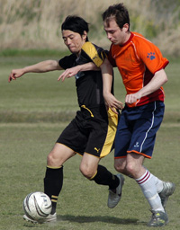 |
|
Masaki Sakai battles to keep the ball from the King George defence |
King George Slain by Panthers
Misato, Saturday 5th April
Feeling pretty sick after back to back nomihoudais, the only consolation on Sunday morning was that full-back Lee was driving and giving me a lift to the wind funnel of Saitama and Misato. After watching the end of the eventful Maritizio vs Dutch game we finally kicked off, and the ref was in for a much more peaceful game. Once again the pitch was dusty and the bounce uneven. A gust of wind swept sand into our eyes as we lined up, fitting for what was to come.
Panthers started with 5 changes from last week's win against Shane, but it seems that we finally have some strength in depth and we were confident that we could make this 9 unbeaten in Division 3 with the players we had out. ... more ...
RB
Sun Shines on the Panthers in the Windy City!
 |
|
Defensive action - Riaz Donaldson clears the ball for Shane FC. |
Misato, Saturday 28th March
The thought of getting up on a Sunday morning after a night drinking under the sakura to catch an early train out to the windy, dusty pitch that is Misato must have filled the team with dread! I however did all those things except the train and I have to say a car is the way to go! Still we all got there in some kind of condition, some hungover (naming no names), some with digestive issues (not sure Asahi pay the cleaners enough to go near that toilet again) and some in the peak of health, well, peak of health maybe a little extravagant. Still, we had a full team AND two subs, almost unbelievable.
more ...
LR
'Shut that Door!' YCAC smash BFC's Larry Graysons
YC&AC, Saturday 28th March
Usually it is the Taw family playing the Generation Game at YCAC.
BFC may have picked up the toys hurled by their 'best player' after last week's draw with Hibs but clearly should have kept a Tonka truck or two tucked down their shorts for this one.
Fill your boots with more cliches... more ...
AH
Improving Embassy hold Lions
| 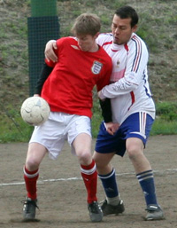 |
|
Manhandled - BEFC striker gets very close attention from the Lions defence |
Todoroki, Saturday 28th March
Two late goals, one for each side, rounded off an entertaining game in the trite conditions of Todoroki. A scrambled goal five minutes from time, looked to have given the Lions the points, but a trademark Takanori screamer gave BEFC a deserved share of the spoils.
Earlier in the week, it had looked like the Embassy were struggling to put together a team, let alone one to defeat a competitive Lions side that has enjoyed an impressive debut season in Division One. But a late rally of interest saw the Embassy assemble a team with a solid look throughout, and so it would prove as they settled well, despite safe-hands Eddie leaving clean-sheets Richie between the sticks for the first ten minutes. more ...
RH
Sala by the Numbers
Fukuda Denshi, Sunday 22nd March
Sala vs Swiss, an original TML/IFFL fixture that is best described, perhaps, against a backdrop of relevant statistics from campaigns past and present. And a few irrelevant ones as well.
To the numbers then. The Swiss turned up on a windy Sunday evening with the bare 11. Sala, on the other hand, had a full 16 once again and welcomed back Toby, Yusuke, Take, and Koji, but they were also without several of their own regulars – Brookey was back in Norwich, doing what it is that people do in Norwich, while Scotty and Sam followed Andy Cross’ lead in the Tokyo Marathon. more ...
GG
Sala Dig Deep to Gun Down Jets
YC&AC, Saturday 14th March
With another solid performance Sala took all three points in this titanic tussle, running out 3-2 winners after a spirited fightback by the Jets, and then running swiftly to the boozer to pound down some pints in celebration. Yata! more ...
ST
 |
|
'The latest in body art, by Will Kol! |
Football on the brain...
Misato, Sunday 22nd March
Stepping out of the van door at Misato you could have been thinking we had just stepped out of a plane 15,000 ft off the ground to go skydiving. It was pretty windy and cold, and like the goal nets too we wanted to fly away and never return, especially as we realized we had only six players. RWC had more that enough players taking up a full squad and both linesmen and more to spare. They had also brought out a couple of Geckoes as well. more ...
WK
|
Zion's Keeper Maeda keeps the ball out. |
Zion FC strikes again
Hodogaya, Sunday 22nd March
Zion FC arrived at Hodogaya knowing that this was a really important game to win. The weather was chilly but good for soccer. We were well aware that Barbarians would put up a good fight as they always do.
The first game back in November saw Zion easily overpowered Barbarians 7-1.
We didn’t expect to repeat this but we knew that a win would give us some breathing space from the chasing Albion Old Boys and YC&AC 2nds. more ...
A
Rain Will Not Stop Play (this year either)!
 |
|
Dan Clark & James Stevenson celebrate winning the 5th FJ Charity tournament. |
Footy Japan Charity 7's Football Tournament, In aid of Jeannie and Billy’s Children’s Foundation (to find out more about Billy & Jeannie’s Children’s Foundation click here)
Friday, March 20th 2009.
Last year, rain delayed the Charity 6's by 1 month and even then it was still played in thick mud! This year with a beautiful new turf pitch, not even a monsoon like down-pour as the captains were about to make the draw, was enough to dampen the spirits let alone affect the running of this years Charity 7's. In fact it actually turned warm and sunny as the 17 teams vied for the various silverware on offer whilst simultaneously raising over ¥300,000 for JBCF. more ...
FJ.
 |
|
George 'Pele' Clarkeson lauches himself clear of his zimmer frame to win a ball. |
Veteran Cohort Routs Barbarians
Oi Futo Dai Ichi, Saturday 7th March
The grizzled veterans of The Albion Old Boys are almost perversely proud of their ability to give opponents a good mugging while nicking a narrow win, so to label them Free-Flowing Entertainers might be a bit like complimenting Mel Gibson's Braveheart on his cute tartan skirt.
But the Old Boys may have to get used to the label as a 6-1 win over Barbarians made it 17 goals scored in the last 3 games, and moved the Albion into second place in TML Division 2. more ...
TC.
Panthers Solid but Lacking Bite
|
Romen the Rambunctious avoids a wild strike from Kev Gray as Panthers hold Sun. |
Oi Futo Dai Ichi, Saturday 7th March
Friday afternoon, 2.28pm - the odds were stacked heavily against this game even going ahead. As Sid prepared for his latest driving ban he remained adamant that the clouds would disappear and 28mm of rain would somehow drain from the sandy oi futo surface.
Saturday morning, 8.00am. A clear day overlooks Tokyo, surely it's on. My bet is that 12 out of the 15 turn up, and 4 of them are hungover. more ...
RB.
French Kippered - by The Salmon
ASIJ, Sunday 8th March
Groundhog Day with 'The Salmon' spawning a hat-trick as BFC spanked the French 6-1 in what is becoming almost a weekly meeting between the teams. more ...
AH.
10-man Embassy Grind Out Draw
 |
|
Spectators enthralled by the action during the BEFC vs Swiss match! |
Oi Futo Dai Ichi, Saturday 7th March
BEFC and Swiss played out a largely uneventful goalless draw in the dirt of Oifuto, giving the Embassy their first clean sheet and only their second point of the season.
Indeed, they will have left the happier of the two sides having played the last half hour with only ten men. more ...
RH.
Vags back in the Points
Oi Futo Dai Ichi, Saturday 7th March
Vags hauled themselves out of the quicksand of successive defeats with a gritty if monochrome performance against Jetro to draw 0-0. more ...
GQ.
Battling Embassy go Down to Leaders
YC&AC, Sunday 1st March
Hibs vs BEFC, Top vs bottom, Goal difference: plus 46 vs minus 34. Hibs’ top marksmen had scored the same number of goals as the entire Embassy team, for christ’s sake! Surely this was the most uneven match-up since the inception of TML. The Hib’s won of course, but they certainly knew they’d been in a game, and BEFC can be proud of their performance. more ...
RH.
Panthers Maintain Form
| 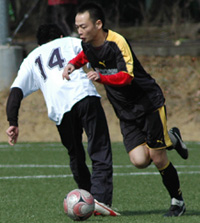 |
|
Masa goes on a mazy run for Panthers. |
Setagaya Koen, Saturday 28th February
Rain, rain, more rain. That’s what I expected going out on Saturday morning to setagaya-koen’s beautiful pitch. Low and behold I was greater with a recent stranger to Tokyo, SUN! Just the walk to the pitch was great so I had high expectations for the game. more ...
LR.
Sala Pummel France
Fukuda Denshi, Sunday 22nd February
Fill a bag with poo and punch it!!! Just like last year, that's the only way to describe another explosive encounter between Sala and France. So explosive, in fact, that Napolean and Nelson would have, respectively, found their diminutive stature and lack of appendages too inadequate to take part in this tumultuous battle. And, what a stonking score to go with it. 7-1 to the Sala, with two players bagging hatricks, no less than 5 yellow cards!! more ...
ST.
How to Climb a Table on One Leg
 |
|
Naoki Ogasawara volleys in for Albion. |
OiFuto, Saturday 21st February
Even though it involved a team that specializes in against-the-odds victories, this game would have had William Hill and Paddy Power scratching each other's heads in disbelief. Mauritzio had a 14-man squad that looked much more capable than their lowly league position would suggest. The Albion Old Boys played almost the whole game with ten men, three of whom would have been substituted for injuries had the option been available. Nevertheless it was the limping veterans who were on the right end of a 7-3 scoreline that takes them firmly into nosebleed territory at the top end of Division 2. more ...
TC.
| 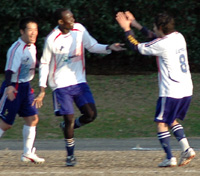 |
|
Zuhair celebrates after scoring Lions 2nd. |
Lions’ Appetite for Geckoes
OiFuto, Saturday 21st February
A roller coaster season for Lions saw them field their strongest squad for the first time this season, despite the absence of the influential captain Somi for the third game in a row. With the bench holding the likes of Ahmed Gaafar, Omar, and last year’s Lions top scorer Ken Hersche, surely the Geckoes were in for a match.
Lions should have won the first game against Geckoes, but lack of finishing made them pay dearly as Geckoes won the first meeting 3-1. more ...
HS.
| 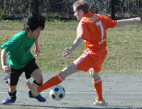 |
|
Yan Vermeullen misses a tackle for DEFC |
By the Skin of the Oranje
OiFuto, Saturday 21st February
A well fought draw between the n.2 and n.3 teams of division Two entertained the two spectators at Oi Futo dirt this afternoon.
Back in September, the Dutch Embassy easily disposed of a good Zion team thanks to their swift strikers, but this time the Zion boys put a much better performance and showed significant skill with the ball. more ...
LVL.
Sala Floored by Late Tyson KO
YC&AC, Sunday 15th February
It's that time again, doomseekers and sadists! When Scorchio pens another tale of what could have been and what nearly was for poor old Sala FC. A 3-2 defeat to YCAC was the bottom line this time. more ...
ST.
We're Gonna Win the League!!
Hachioji Park, Sunday 15th February
Nine hundred and ninety minutes into the season and the monkey has been well and truly yanked from our backs. That's right! The Embassy have a point! Watch out Hibs – our title charge is back on!! more ...
RH.
Oh Sh*te! Three More Points!
OiFuto, Saturday 14th February
Talk about going against your best interests. Like George Best scratching the stitches above his freshly-transplanted liver with one hand while pouring himself a pint of vodka with the other, the Albion Old Boys just can't seem to keep their spirit bottled up, as even the knowledge that a victory would place them them firmly in the unwelcome territory of the Division Two promotion battle couldn't stop them from putting in another committed display to overcome the BFC Vagabonds with a hard-earned but well-deserved 4-2 win. more ...
TC.
 |
|
Pete McGill fires in from 20yds as Celts come back from 2 down to hold BFC 2-2. |
Celts Cook BFC's Goose
Setagaya Koen, Sunday 15th February
BFC's chances of a third successive TML title took a battering when they blew a two-goal lead against the Kanto Celts. The hankies were out at the final whistle. more ...
AH.
Clash Give it Some Moore
Misato, Sunday 15th February
Zion and the Clash fought out an eventful one-all draw in the early kick-off at Misato on Sunday.
Perhaps unfortunately, this game will be remembered for more than just the passing football, hard-but-clean competitiveness and a result which probably just about satisfied both teams. Fortunately, it will definitely be remembered. more ...
AW.
Battling Sala Outclassed by BFC
YC&AC, Sunday 8th February
Well, the headline says it all. Sala fought hard and battled admirably, but in the end, were outplayed by a classy intelligent footballing team and last year's deserved champions. A typical laser beam shot from Carlos Aranda, a header from BFC new guy, Mike, and two poachers goals from John Day, proved more than enough for BFC to take the points. more ...
ST.
The Fall of the Romen Empire
 |
|
Substitute George is put on 'Dog duty' |
Setagaya Koen, Saturday 7th February
It is said that Nero fiddled while Rome burned, that Caligula had his wife humped by a horse as he stared madness in the face. Panthers Captain, Romen the Ruthless, seems to have some aristocratic lineage from the Pallatine, nonchalantly fiddling with his dog as the midfield crumbled; the dream of 3 points with it. more ...
KG.
Anyone Got a 'Four-Sleeved' Shirt?
YC&AC, Sunday 8th February
Never mind that BFC blitzed Sala 4-0 to keep their hopes of a third straight TML title alive, the biggest question on the night was if there was a four-sleeved shirt in the kit bag. more ...
DC.
A Bad Case of Wind
YC&AC, Sunday 1st February
With a collective age of around half a millennium, it's understandable that over the years the Albion Old Boys have picked up more than their share of bad footballing habits, some of which, like regularly bringing a chocolate-coloured toy poodle to watch you play, are far too embarrassing to even mention here (so Karl Twohig can rest assured that his secret is safe with us). more ...
TC.
 |
|
Shane were sent to their first defeat of the season by a very skillful El Diego |
Raffa's Brace Helps Clash Revival.
YC&AC, Sunday 1st February
At YCAC the Clash came back from two-nil down at halftime to beat Jetro 3-2.
This game was perhaps less team versus team over two halves, than each team taking a turn to play the weather for a half. With an incredibly strong and cold wind blowing lengthways down the pitch from the club house end of the ground, the team with their backs to the wind were always going to find the going considerably easier. more ...
AW.
Sala Harpooned By Celts At Sea World
Hachioji Park, Saturday 31st January
If only Sala could face FJ Plate opposition every week, and play on nice dry pitches, their current transitional phase would be a lot easier to come through. However, with a waterlogged pitch and a hungry Celts team eager to cement their place in the TML above Sala, there was to be no easy ride in this match. more ...
ST.
|
|
Shane were sent to their first defeat of the season by a very skillful El Diego |
A Game of Two Thirds
Hachioji Park, Saturday 31st January
Trying to break the habit of writing reports only when we don’t lose, but the match against the Hibs on Saturday night is worth reporting.
The Hachioji Park pitch was quite drenched, however the game was much more interesting than expected. more ...
HS.
Even Astro-turf Suffers in Saitama Rains
Hachioji Park, Saturday 31st January
24 hours. Lots can happen in 24 hours. I surely will never forget 31st January 2009. The day started with me scheduled to referee 2 matches at Hachioji from 9 am. Wake up to the most delightful winter weather Japan has to offer. The second of 2 consecutive days of freezing rain and window shaking winds. more ...
JS.
| 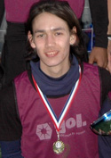 |
|
Alex led his Schoolmates to New Year 7's victory |
Farewell Alex Sahara. If I was a girl....
Hachioji Park, Saturday24th January
BFC said farewell to Alex Sahara whose final game for the club reflected all that the young dynamo is: cool, slick, forward thinking and very, very sexy. Alex has been at the club since he was 14 years old and this length of service actually grants him exclusive entrance to the OB's club, yet he's still, or was our youngest player. Arriving late for his final game, wearing a limited edition pair of Converse and a couple of Vivienne Westwood bags under his eyes form the night before, Sahara went about doing what he does best. Terrorising the opposition with his pace, hair band and metrosexual magic.... more ...
AH
Celts Tame the Lions
 |
|
Roppongi's finest couldn't catch Henry & the Kitbag |
Hachioji Park, Sunday 25th January
Celts started their Sunday evening with a bit of a scare when midfield maestro Henry decided to leave the kit bag outside the Citibank building in Roppongi while he popped upstairs to withdraw his match subs & pocket money for the night. On his return he found numerous police officers had surrounded the bag, cordoned off the immediate vicinity and were calling in the bomb squad to destroy the bag in a controlled explosion. Having negotiated his way out of the situation by basically picking up the bag and scarpering down the road with Tokyo’s finest in pursuit (cue the Benny Hill music), he managed to find his way to the rest of the lads and we made our way to the game. more ...
SY.
Frozen Nuts for Breakfast
Hachioji Park, Sunday 25th January
If the 6 am alarm clock and the 2-hour drive into darkest Saitama don't do it, if the stinging snow flurries and the express-delivery-from-Vladivostok winter wind don't do it, then the first slide tackle that sends several litres of ice-cold surface water through your shorts to give a rude awakening to your Nobby Stiles will definitely get you thinking "What the fcuk am I doing here?". more ...
TC.
Lions Caged but not Tamed
Fukuda Denshi, Sunday 18th January
BEFC went into this fixture pointless and on the back of some recent demoralizing defeats. Up against a Lions side, who on the back of a creditable draw with the Hibs the previous week, were looking up rather than down, the (imaginary) bookmakers gave the Embassy little hope. more ...
RH.
| 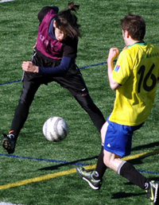 |
|
Alex Sahara, Captain of NSP, fires in a shot as they battle their way to victory in Footy Japan's New Year 7's. FULL STORY |
Babarians Pip Clash to the Post
Fukuda Denshi, January 19th
After trailing 4-1 at half time, the Clash fought back to 4-4 only for the Barbarians to snatch victory in the closing minutes.
On a fresh January afternoon at Fukuda Denshi the Barbarians opened the scoring midway through the first half when a solid shot from outside the box found its way in to the Clash goal. more ...
AW.
Mr Fan-Tats-Tic Sinks Embassy
Fukuda Denshi, Sunday 18th January
The Sunday late kick-off in Fukuda Denshi saw the bottom 2 clubs face each other, where a win for BEFC would mean them starting off their season in terms of points, and a win for Lions would mean a jump to the dizzy heights of mid-table, the least they expect with a game or 2 in hand. more ...
HS.
Lions call Dibs on Hibs
Hachioji Park, Monday 12th January
Despite winning the Div 2 title last year, Lions have had an under par 2008 that saw them win only 6 games out of 16, compared to the fine run in 2007 of 10 wins in 14 that led to securing the Season 5 title. more ...
HS.
 |
|
Ian 'Frodo' Warner, had golry in his eyes, til this last minute effort hit the side netting! |
Vagabonds Go Dutch
Oi Dirty, Saturday 10th January
Pablo Pomares`s infant son has had trouble sleeping. Luckily for him his father knows from experience one place in Tokyo where the urge to sleep is overwhelming – a Vagabonds match. The little critter was out like a light seconds after the kick off, missing both goals and all the action of a game against the Dutch Embassy that ended in a 1-1 stalemate. more ...
GQ (Not the magazine).
French Feel BFC Six Appeal
YC&AC, Sunday 11th January
6-0 will do for starters. BFC's first TML game of the season could have ended in a cricket score after two horror penalties, a couple of missed sitters and some decent saves from French keeper Filet Mignon. more ...
AH.
Clash Get First Win for New Sponsor
Hachioji Park, Sunday 21st December
On a balmy December night in Saitama the Clash earned a long overdue first victory of the season by defeating the Dutch 2-1 in a hard fought encounter. Following a missed penalty from the Dutch, Andy Gill opened the scoring for the Clash with a stunning goal midway through the first half. It was 2-0 at the break after Rob Keyworth coolly put away a back-post header. more ...
AW.
Oranje? Looks More Like Mikan to Me
OiFuto Dai Ni, Saturday 13th December
36, 40, 44, 52, 41, 42, 48, 35, 42, 23, 47. No, it's not the bust measurements of the finalists in the Miss Pneumatic Universe contest (How did the near-death anorexic Miss 23 get in there? Has Miss 52 got a MySpace page?), no, actually it's the ages for the starting line-up that the appropriately named Albion Old Boys put out in their magnificently gutsy 2-1 win over the appallingly mis-named Dutch Embassy F.C. more ...
TC.
Hibs Open 11pt Gap Over BFC
Hachioji Park, Saturday 13th December
BFC went into this game confident that if we played our best we could beat the in-form Hibs. Instead, we came away with nothing, although, to a man, you couldn't fault the effort. It was a massive game for both clubs and everyone knew what was at stake. If BFC lost so they lost their title. more ...
JM.
We Want Our Title Back
 |
|
YCAC will soon have it's new AWS Field. More |
Hachioji Park, Saturday 13th December
With the usual writer Bevan swapping the sun and beaches of Phuket for stupid amounts of snow in Hokkaido, the match reports from Hibs have become non-existent. The obvious choice to step up and do them would be our very own journo, Jay, but he seems to be a bit too busy entertaining his pet cat, or more likely on his own prowl in Roppongi or wherever it is you go to look for girls of the loose variety. more ...
JS.
Vags Fail to Reach Zion
Hodogaya Koen, Saturday 6th December
Sixteen consenting Vagabonds passed up the chance to go a-berrying and a-mushrooming in the woods on this fine autumn day for a 9am game against Zion. They may still be regretting that choice, losing 3-5 in what was probably their most disorganized performance so far this season. more ...
JM.
8 BRAVE MEN, 2 PUNISHING TOURNAMENTS, 1 GREAT TOUR.
 Footy Japan International FC, Sponsored by Robert Walters
Footy Japan International FC, Sponsored by Robert Walters
Phuket International 7's Open & Masters Competition
29th/30th November, FIFA Tsunami Memorial ground, Phuket, Thailand
Having just 1 sub, for a 7-a-side tournament is hard work.
Add to that some quality opposition, searing Thai heat and the fact that the same 8 man squad would have to play in two competitions, both Open and Masters simultaneously, and the job quickly evolved from laborious to one of utter insanity. more ...
FJ.
Hibs Phuket Champions 2006, 2007 and 2008, Three Peat!
Well we did it! Winning not only the tournament but the Fair Play award too. A small but strong squad of Hibs players made the trip down to Phuket for the 7s tournament again this year. more ...
BC.
8 BRAVE MEN, 2 PUNISHING TOURNAMENTS, 1 GREAT TOUR.
Footy Japan International FC, Sponsored by Robert Walters
Phuket International 7's Open & Masters Competition
29th/30th November, FIFA Tsunami Memorial ground, Phuket, Thailand
Having just 1 sub, for a 7-a-side tournament is hard work.
Add to that some quality opposition, searing Thai heat and the fact that the same 8 man squad would have to play in two competitions, both Open and Masters simultaneously, and the job quickly evolved from laborious to one of utter insanity. more ...
FJ.
Hibs Phuket Champions 2006, 2007 and 2008, Three Peat!
Well we did it! Winning not only the tournament but the Fair Play award too. A small but strong squad of Hibs players made the trip down to Phuket for the 7s tournament again this year. more ...
BC.
Toby Boy Blitzes Hatrick At Old School Reunion
Fukuda Denshi, Sunday 30th November
26/11/08 04:30 Hours - Commandos arrive in Methven and airlift strike legend to Japan!
26/11/08 10:05 Hours - Gravediggers arrive in Kichijoji and exhume trusty goalkeeper!
It was these two events that led to the legendary pair, Giles Legg (one of Sala FC's founding fathers) and Andy Cross (stalwart goalkeeper of many a past and present TML team) turning out for Sala against the Lions. Good on them both! more ...
ST.
A Hattrick then Farewell
Hachioji Park, Saturday 29th November
Following a mid-week take-over from Robert Walters and the promise of a fresh new strip the geckoes took on the might of Saitama that is the Jets at Hachioji Park. more ...
JS.
"A Sub, a Sub. My Kingdom for a Sub!"
(Why Richard III Fails his Old Boys Trial)
Oi Futo, Saturday 29th November
Oh no, here we go again. Cue trumpets playing theme tune from 'Rocky' over footage of the aging but still brilliant Ali in Kinshasha doing his rope-a-dope on the much younger, much fitter George Foreman. I'm sure many of you are getting fed up with reading this "Outnumbered-Old Geezers-Prevail-Over-Numerically-And-Chronologically-Advantaged-Opponents" piece, but it keeps happening, and though it's getting harder to describe these Groundhog Days in a different way each time, I don't get get fed up writing about them, especially when the Old Boys have taken three points off Zion FC, one of the top teams in Division 2, with a thoroughly deserved 3-1 victory. more ...
TC.
The Bitter Chalice
Hachioji Park, Monday 24th November
Picture this, gentle reader. It`s 9PM, the freezing rain stings more than Jorge Kuriyama`s secret Jalapeño sauce and you are abt 100 km from home. Your team is up 3-2 against the squad at the top of the league with five minutes to go. One of your strikers just hit the post. What do you do? Of course you concede two goals just in time for the (excellent) ref to blow the whistle. Sure, the strong FC International team play great football and dominated the game, but the Dutch held their own, evening the score twice before taking the lead, thanks to teamwork and their swift strikers. Such is the cruel game of football. On to the next game...
LL.
A Very Nice Game of Footie
Hanno, Saturday 22nd November
Despite a late kick off, waiting for players to arrive Y-Abe started the match in Hanno with only nine players. The Jets looked to press home their numerical advantage early on and did so in the first five minutes. more ...
CP.
Tireless Tomo Trumps Jets
Hanno, Saturday 22nd November
Very occasionally a match comes along that is has it all. A game that can be the source of bar-room banter for years to come as the great moments and controversy are remembered time and time again. This was not one of them. more ...
BC.
10-man BFC squish Geckoes
Daito Bunka, Sunday 16th November
Even when he is sent off Carlos Aranda makes an impact. TML Champions BFC went from 2-1 and not overly impressive to 5-1 after 'El Mulleto' (you were warned, Carlos) got his marching orders for an ill-advised shove on a Geckoes player. The same score as last year's meeting on the same Mickey Mouse pitch between the two sides and a result, which like season, saw champions BFC climb above Geckoes in TML1 ... so, you know, that's good. more ...
LS.
| 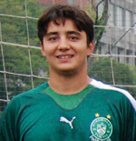 |
|
Andre Pinto increased his goal tally to 10 with another hattrick! |
Hibs Make it Six in a Row
Hachioji Park, Sunday 9th November
The Hibs and France have a colourful history dating back to a time when the TML was not even a twinkle in Sid's eye. So it was good to finally reacquaint ourselves after France's one year hiatus in division two. France FC are a feisty bunch and a game against them is always likely to have its share of thrills, spills and controversy. This one was no different. We’ve had some memorable games over the years including the last kick of the game goal that saw us win 3-2 Hibs after being down 2-0 down at half time and the 8-5 victory after going down 1-0 to 10 men after two minutes before bouncing back to be 7-1 up at half time. more ...
BC.
Shouldn't Let a Cub do a Lion's Job!
Misato, Monday 9th November
After the BFC game, Lions were looking forward to challenging the top guns in Div 1, and with 6 players who were core in the win over BFC missing due to exams (and 1 sending off), Lions hoped that their skillful young lads will do the job against the Swiss. more ...
HS.
| 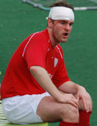 |
|
Mauled by a Lion? BFC's Garry after a bloody encounter. |
BFC Brought Down to Earth by Gritty LIONS
Hachioji Park, Monday 3rd November
BFC’s season seems to have hit a snag after they were caught out by some very physical and hungry Lions. BFC have also made it a habit of not writing match reports when they lose. But this time, instead of claiming amnesia or lack of visual acuity, BFC will humbly eat pie this week and accept the “shame.” We were well and truly beaten.
The match had many talking points and bizarre events and I will skirt around many of them as decorum requires. Guess who the referee was. There was even blood as the mighty Norse god Garry needed stitches from a collision of heads early in the first half. more ...
EGK.
Div 2 Champs see off Div 1 Holders
Hachioji Park, Monday 3rd November
With Lions almost back to full strength, BFC were assured a game!
Lions team talk after the last game against Geckoes, where wasted chances that could've killed off the game with 2 or 3 goals as early as 15 minutes, cost the Div 2 Champs dearly, as they slumped to their first defeat this season. more ...
HS.
Old Boys Stock Up Two Points, But Another Bad Day for Wall Street
| 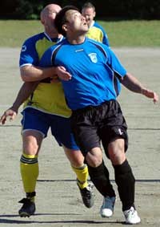 |
|
Hitoshi Ono gets the attentions of WallStreet's Rob England |
Oi Futo, Saturday 1st November
I always feel constrained by this front page teaser format, where you feel obliged to give the game result and a one-sentence summary for the short-attention-span readers when the riff you're working on for the match report might run on and take too many of another game's column inches.
So for those with a short attention span, it was Tirelessly Unpredictable Tokyo Bay Breeze 5, Unforgivingly Bouncy Oifuto Pitch 4, Albion Old Boys 3, Wall Street Clash 2, Beautiful Game 0. For those with a bit more time on your hands, click here...
TC.
Familiarity Breeds... a Better Team
Oi Futo, Saturday 1st November
As most TML players will know, there are occasions when it is necessary to play together with complete strangers in order to get 11 men out on the field. And, as is natural, it is almost impossible to strike up an immediate understanding with someone you have just met. It was this problem, more than anything that led to Y-Abe FC's 5-1 tonking at the hands of El Diego. more ...
JC.
Ex-Celt Ed lifts Hibs Over His Old Team
Hachioji Park, Saturday 1st November
The Celts and Hibs have had a local-derby type rivalry akin to a Man City v Man U and have always had close games which have been played in (largely) good spirit. Both teams come from Irish roots, but in recent years the Celts have had more Irish players than the Hibs. more ...
BC.
Dutch Embassy and YC&C 2 go Dutch
Oi Futo, Saturday 1st November
The spoils were shared at Oi Futo as the Dutch Embassy went head to head with a mixture of High School Kids and their Dads from the YC&AC 2nd team. more ...
LVL.
Celts Hold Off France to Gain On Leaders.
Misato, Sunday 26th October
Celts rocked up to their 4th game of the season having had a mix bag of results in the previous 3 games, beating Geckoes 2-1 then a 1-1 draw with BFC before succumbing to a 0-3 defeat to YCAC. more ...
SY.
Panthers Perform Purrfectly!
Misato, Sunday 26th October
3 weeks in a row we have made our way out to Misato and all we received was a poxy two points from the first two games. Not that we were grumbling mind, we were happy to take on the top team and come away with a draw and despite a hard fought game a draw against Sun Utd was a blessing. So, that brings us to this week’s game. more ...
LR.
Hibs' Brazilians on Fire.
Hodogaya koen, Saturday 25th October
The Hibs have an unwritten rule that if we score 10 against a team we don’t write a match report. Once it reaches that level, the scoreboard really says it all and reflecting on missed chances in the report adding something along the lines of “it should have been 15”; is not going to go down well. more ...
BC.
Skid Row
 |
|
Toby's single goal wasn't enough for Sala. |
Soga, Saturday 18th October
Unfortunately, not the classic metal band of the 90s, fronted by long-haired rock god Sebastian Bach, but the place where Sala FC's season, thus far, has ended up. In a big pile of man poo would be another way to describe that place.
Having started the season with an absolute gubbing at the hands of YCAC, Sala had scraped together two victories against Saitama Jets and BEFC, played out a dismally flat draw with Swiss Kickers, lost a few more guys to injury and irritated the TML with a scandalous lack of match reports!! What more could go wrong??? Defeat to those lovely lads, the Wall Street Geckoes?? Surely not. more ...
ST.
BFC Fire Seven Past Hapless Swiss
Hachioji Park, Saturday 18th October
Last week was a brutal five nil battering of the embassy attaches, this week a merciless seven nil spanking of the Swiss Kickers.
Like Capello’s England, “they’re clearly not the finished article.” I don’t want to fall for the old English sports writer’s trap of hyping an average team after one or two results against mediocre sides like Kazakhstan, but it is quite thrilling to imagine what kind of performances BFC could be capable of when they really hit their stride. more ...
PM.
Shane Held by Hungry Panthers
Misato, Sunday 19th October
Every time we play at Misato I feel like I have to begin preparations to get there at least three days in advance, getting the route to the station, an ordnance survey map for the route from the station and a GPS just in case. Still most of the team arrived on time, sadly we started (and finished) the game with a man down, not the ideal way to face the team at the top of the division. more ...
LR.
Re-Upholstered Old Boys just Fail to Shine
 |
|
Just out of reach, Oldboys keeper Kouka just fails to keep out Jorge's last minute PK. |
Misato, Saturday 18th October
In a sexy new kit that would have drawn admiring gasps from their female fans if such creatures existed, the Albion Old Boys were doing a very good impersonation of classy footballers both before and during Saturday's encounter with Division Two's other newly-promoted team. But the Old Boys came away from Misato with no points for either style or execution as FC International converted a late, late penalty to nick a 2-1 win with the very last kick of the game. more ...
TC.
Embassy Battered by the Other British Club
ASIJ, Monday 13th October
(Woof! Just read Evan’s match report. Fine work sir. I’d like a large glass of whatever he’s been drinking, please barkeep!
I think we’ll just keep it simple here, shall we…) The rescheduling of last weekend’s match from the Saturday to the Monday unfortunately saw an already injury hit BEFC squad further robbed of regular first team players. This meant that about half of those who made it to ASIJ for the clash with BFC were making their season (and in several cases, team) debuts. more ...
TM.
Yes We Can!
 |
|
BEFC's Alex Baubel tries to out-pace the BFC midfield to no avail in the all British Derby. |
ASIJ, Monday 13th October
*Note to self; Don't start with "It was one of those days...definite No No. style? lets see, a hypothetical high school history essay question. can't touch, that's a classic. invent a fictitious player or team that hallucinates about scoring goals the night before at work but never replicates that form on the pitch. maybe. how about pay homage to a great writer by writing in that book's style. nice. milan kundera has been in the news this week.naah too hard..don't have nuff talent... though that opening about Nietzche's question about something along the lines of if life happens an infinite number of times, do some actions take less meaning(lighter) or more of a burden(heavier)?, not sure i understood it correctly but prob could be applied to "If Dan misses sitters over and over, and over and over and over, does it become easier for him to take loads and loads of schtick and thus something lighter for him so he is not bogged down by it or does it start to weigh on his young shoulders and possibly lose the number 11 shirt to someone else? more ...
EG.
Panthers Keep Sun in the Shadows
Misato, Sunday 12th October
A determined display of old-fashioned football on a hot Misato day saw the Panthers climb into the Top 5 jungle of Division 3. Overhead kicks from outside the box; crazy red cards; diving headers; double turns on antique sixpences; pitch invasions and streakers – there was none of that in this mid-table scrap that ended honours even. more ...
DK.
Missed Chances…
Hanno, Saturday 11th October
Saturday’s late game vs newly promoted Lions FC had an air of uncertainty lingering prior to kickoff. Coming into the game Lions had only played the sole game vs France and had emerged victorious. more ...
ET.
 |
|
DEFC's Captain Toshi, takes one for the team as they defeat Zion. |
Our Men in Todoroki
Todoroki, Sunday 5th October
The Dutch convened at the badlands of the Musashi Kosugi ground, optimistically renamed Todoroki by some joker, for a TML 2 classic with Zion. A late (6.30 PM) kickoff added to the bleakness of the location and to top it all off a nice early Winter rain graced the area just as we kicked off. more ...
LL.
Lions' Eye for Talent
Misato, Sunday 5th October
Lions first Division 1 match at last kicks off, and with a crucial society event, Lions were missing a handful of key players, including the reliable left back Mo Birkia, his dribbling maestro of a brother - Abu, the talented tall striker Zuhair, the Captain Gaafar Somi, and the super keeper - Orlando (and more!).... more ...
HS.
Old Boys 3? Maritizio? Who?
Hachioji Park, Saturday 27th September
I went to the doctor yesterday to ask him what I should do about this increasingly disturbing short-term memory loss. I wish I could remember what he told me. I definitely need some kind of help because by Sunday afternoon large chunks of Saturday's game had just vanished. And I hadn't even had a drink. more ...
TC.
Sense of Déjà Vu as Embassy Squander Another 2 Goal Lead
Hachioji Park, Sunday 28th September
Let’s hope this isn’t habit forming.
For the second time in as many games the Embassy managed to throw away a well deserved, two-goal lead to lose three-two at the final whistle. What perhaps makes this loss all the more frustrating is that this performance was even more schizophrenic than two weeks ago. more ...
RK.
Time Gentlemen, please!
Hachioji Park, Saturday 27th September
Div 3 may occasionally be a wee bit short on skill and speed. This week it wasn’t short of either, but it was short on time. The match between the Jets 2nds and the Stoneds ended after about an hour’s play in a 2-2 draw. more ...
CP.
JETs Off the Mark
Hachioji Park, Saturday 27th September
The Saitama Jets claimed their first points of the season, twice coming from behind, to record a vital win over a rugged and physical French side at Hachioji Park.
The last time the sides met, in season 4, the Jets sent the French down to Division 2 in an ill-tempered game. more ...
RK.
Hibs Continue Scoring Spree.
Hachioji Park, Saturday 26th September
The Hibs have had the better of the Geckoes over the past few seasons, compiling over twenty goals in the last four meetings, but we’d heard rumours of their renewed squad including a tall kiwi midfielder and a few speedy and skilful Japanese. We’d also noted their draw against the YCAC and win over the Swiss; so the Hibs went into this match expecting a tough and close game. more ...
BC.
 |
|
Albion Old Boy's Naill Flaherty, feels those aging joints in his introduction to Div 2. |
Old Boys Match Vags in Div2 Debut
Hachioji Park, Saturday 20th September
Typhoon number 13 had blown through several hours before kickoff, but there was still plenty of wind howling through aging lungs as the Albion Old Boys huffed and puffed their way to a 4-all draw with BFC Vagabonds in a hard-fought encounter at Hachioji Park.
Though a few of them had to be dragged kicking and screaming out of the relative comfort of Division 3, an impressive number of Seasoned Maestros Of The Beautiful Game had dodged the trip to the glue factory and reported back for the Old Boys' Division 2 debut. more ...
TC.
Swiss Suffer As Hibs Rampage.
Hachioji Park, Saturday 20th September
To say the Swiss have suffered from the loss of key players recently is like saying that global financial markets are currently experiencing a bit of a rough trot. While two seasons ago the Hibs lost a large chunk of our electrifying 05/6 five goal a game squad, we were very fortunate to recruit some great players to step in soon after. more ...
BC.
Jumpers for Goalposts?
Hanno, Saturday 20th September
10:30 AM, morning break. - We stream onto the playground for our 15-minute kick around. At least 5 minutes are spent picking teams. If you're big or quick or mates with today's 'captain' you get picked first, weedy, smelly or funny-looking and you're one of the dregs that both captains try not to get lumbered with. more ...
GG.
BFC Open Title Defence with 5-0 Win
 |
|
Twinkle toes Yamagishi dances round a JET |
Hachioji Park, Sunday 14th September,
Different captain, same sort of result. Early days but Morson's first competitive game in charge ended in a 5-0 evisceration of Saitama JETs in sweaty conditions more suited to sucking ice lollies down at the beach. There was also nice symmetry for BFC in reversing that humiliating Cup final defeat by the Little Green Men.
Aranda scoring twice, once from the spot, and Day snapping up one from close range continued a theme from last season but BFC will do well to produce a better goal than Taka's scorcher which put BFC 2-0 up.
more ...
ST.
Same Old Story
Hachioji Park, Sunday 14th September,
It wouldn`t have been inconceivable for this game to have ended up 9-9. In an open andentertaining affair under the floodlights in Hachioji, Sala finally edged it, but the Embassy showed more than enough to suggest that this season is one of great promise. more ...
RH.
Jets 2 Follow Form Book
Hanno, Sunday 14th September
After a well-deserved mauling by the Panthers in their first league outing, the Saitama Jets 2nds returned to form with a 3-0 win over the hapless Guarana Republic. Having squeezed past the men in green 4-0 and 3-0 last season, the Jets could be forgiven for starting this game full of confidence. In fact, for the first 15 or 20 minutes, Guarana barely got out of their own half. more ...
GG.
Dutch Courage
Fuchu no Mori, Saturday 13 September
It was with trepidation that the Dutch Embassy prepared their debut for the 08/09 season facing the Jetro team, always a solid competitor in the past. Captain Toshi assembled a squad made mostly of old faces with the artificial augmentation of a couple of players rumored to be of Heisei Umare. more ...
LVL.
YCAC Finally Break Sala Jinx.
| 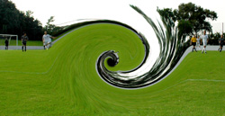 |
|
Sala get sucked into YCAC's Black Hole, with Tyson Masar at the controls, ending an era. |
Hodogaya Park, Saturday 6th September,
Wednesday the 10th was the date on the whole teams lips pre match. The date of course that the Physicists at CERN were due to flip the switch on the Large Hadron Collider sending subatomic particles whizzing around a 17 mile ring somewhere under the earth of Geneva. The debate was heated as the older guys put in contact lenses and strapped themselves into orthopedic knee braces while the youngsters were mostly rehydrating and wondering whether to tell the older guys that their wives had been padding their housekeeping in the Swingers bar in Shinjuku the night before more ...
ST.
Samba Beat Inspires Geckoes Feet
| 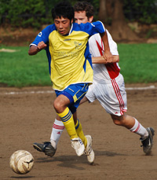 |
|
Chasing the game, Swiss' Ben Andrist tries to catch Masa Kenmochi to no avail. |
Yoyogi NHK, Saturday 6th Sept,.
A sunny September Saturday in Yoyogi was the scene for the Geckoes second and Swiss' first TML fixture of the new season. As the teams made their way to the pitch from Harajuku station they couldn't help but notice two important events taking place nearby, first the Tokyo Girls Collection.....ah....erm...and, oh yes, more importantly of course the Brasil Festival in Yoyogi Park. At one stage we actually had to squeeze through as a drum and dance troop who had come all the way from Brazil (though looked suspiciously local) had basically blocked the road and was putting on a good pre-game show. Good start for the Geckoes even before kickoff knowing we'd be pulling on yellow kits before long.
Manager Simon Bromwell, his second game in charge, had a young team looking fit and ready to samba dance the ball right through the Swiss. A far cry from the days of old when the closest thing considered Brazilian dancing by the Geckoes was after midnight in the pong, thinking they look good in the mirror doing the robot next to (the soon to be scooped up by Ronaldo) Isabella...so I'm told! more ...
PZ.
Geckoes & YCAC Share Points in Div 1 Opener.
 |
|
Rob Keyworth is kept busy in the 1st fixture of TML6. |
Hachioji Park, Saturday 23rd August,
They say to be champions of the TML you have to be able to win ugly, and this has been proved year-in-year-out by the aesthetically challenged players of the previous 5 TML championship winning teams (with the exception of Jon Day, who as everyone knows is dead gorgeous). If this is the case this season, the best the Geckoes and YCAC can expect is to end up towards upper mid-table, with both teams seeming more than happy to draw prettily. more ...
SB.
Meet the New Season. Same as the Old Season.
There was a sense of deja vu around the YCAC camp as TML 6 kicked off on saturday. Not so much the fact that we were back at Hachioji with the work shy Jorge* in charge again barely 2 months after we finished TML 5 in the same surroundings. more ...
ST.
 |
|
Sean Lewis closes down Tomo Kobayashi as Panthers claw past JETS 2nds. |
Panthers Leap to New Heights!
Hachioji Park, Saturday 23rd August.
Having been part of the team since it began (this time last year) I have seen many changes to the Tokyo Panthers team, the way we play and the score lines. The score lines have got better, the players faster (and it seems younger!!) and the team more fluid. This was definitely the case for our first game of the season.
A rejuvenated side and a fresh challenge against Jets 2nd saw us fully commit to going forward and believe it or not to score! more ...
LR.
Football Rules!!
FJ Head-quarters Shibuya, August 21st,
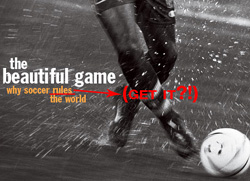As TML Season 6 kicks off there's a great deal of speculation, rumour and hullabaloo going on about who's playing for who? Who's been tapped-up and what new recruits will be creating names for themselves this season? Word on the street is that 3-ex pro's will be featuring in at least 2 of the Divisions, one with international caps. Fact or Fiction? We'll have to wait and see. The first games of the season are scheduled to kick off on Saturday, 23rd August and all players, captains, officials and anyone with anything to do with the league are urged to go through the TML Rules for Season 6 with a fine-toothed comb - PARTICULARLY REGARDING PLAYER REGISTRATION & THE STRIKE SYSTEM. click here to read the rules. We are praying to powers on high that NO TEAM FALLS FOUL OF THESE RULES & HEAVEN FORBID ENDS UP FORFEITING ANY POINTS. Captains, Players, Anybody, Everybody, don't let this happen - we IMPLORE YOU TO LET FOOTBALL GOVERN RESULTS, this is what we want, this is all we want, this is all we've ever wanted, this is all we'll ever want. Now, it's in your hands. MAY THE FORCE (of understanding and following simple rules regarding player registration, team sheet submission and payment of dues) BE WITH (all of you) YOU.
FJ.